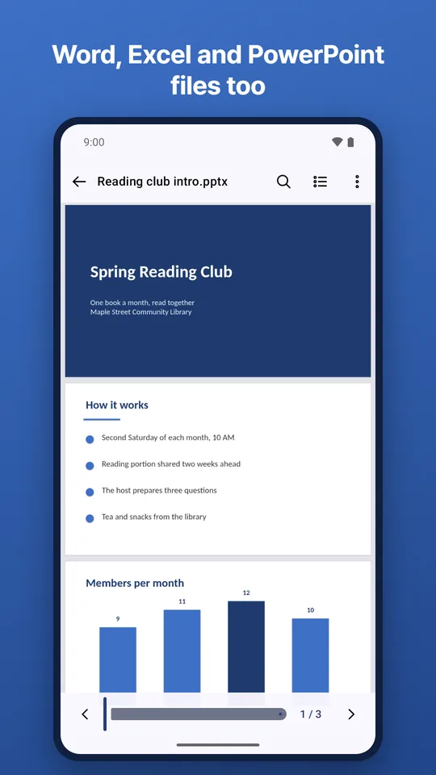

PeriDoc: просмотр HWP и PDF
Открывайте HWP, PDF и документы Office офлайн. Быстро, легко и приватно.
Google Play



PeriDoc: быстрый, бесплатный и безопасный просмотрщик документов для Android. Открывайте файлы HWP, HWPX, PDF, Word (DOCX), Excel (XLSX) и PowerPoint (PPTX) прямо на телефоне или планшете. Аккаунт не нужен, а ваши файлы никогда никуда не загружаются.
Просмотр HWP и HWPX
PeriDoc открывает документы корейского текстового редактора Hangul (HWP, HWPX, HWP 3.0, HML), созданные в Hancom Office, и сохраняет таблицы, изображения и разметку страниц. Корейские шрифты встроены, поэтому текст отображается правильно, а для ещё более точного вида можно импортировать свои шрифты с компьютера.
Чтение PDF
Плавное чтение PDF с поиском по тексту, выделением и копированием, оглавлением, миниатюрами страниц и поддержкой PDF, защищённых паролем.
Просмотр документов Office
Легко открывайте документы Word (DOCX), таблицы Excel (XLSX) и презентации PowerPoint (PPTX) без установки тяжёлых офисных пакетов.
Поиск внутри документов (с OCR)
Ищите текст внутри документов, а не только в именах файлов. PeriDoc индексирует файлы на устройстве, и поиск сразу показывает, в каком файле и на какой странице есть совпадение. Текст в отсканированных PDF и на фото распознаётся только на устройстве (OCR) и попадает в результаты.
Умный поиск (по желанию)
Умный поиск понимает контекст и смысл и находит подходящие документы и сцены на ваших фото. Скачайте модель один раз (около 388 МБ), и после этого вся обработка будет выполняться на вашем устройстве без интернета.
Карточки сроков
Откройте объявление или уведомление, и PeriDoc найдёт подписанные даты, например сроки подачи заявок, крайние сроки и время мероприятий, и покажет их над документом с обратным отсчётом. Нажмите, чтобы добавить дату в календарь или позвонить по контактному номеру. Работает с датами в документах на корейском и английском языках.
Поиск по изображению (с умным поиском)
Найдите похожие изображения по одному изображению или сфотографируйте печатную страницу, чтобы найти исходный файл на устройстве.
Сравнение версий и очистка дубликатов
PeriDoc объединяет версии одного документа, например «отчёт_final» и «отчёт_v2», и выделяет прямо на странице, что было изменено, добавлено или удалено между двумя версиями. На широком экране обе версии видны рядом. Найдите одинаковые файлы и переместите лишние копии в корзину.
Оптимизировано для складных устройств и планшетов
На Galaxy Tab или разложенном Galaxy Fold в горизонтальном положении список файлов и документ видны рядом. В режиме Flex (наполовину сложен) документ вверху, а кнопки перехода по страницам внизу. Поддерживаются сочетания клавиш (например, Ctrl+F) и колесо мыши.
Другие форматы
Текст (TXT), Markdown (MD), CSV, HTML и изображения (JPG, PNG, WebP, HEIC, GIF, BMP).
Возможности
- Постраничный режим или непрерывная прокрутка, две страницы рядом в горизонтальной ориентации, масштабирование жестом
- Копирование таблиц в формате CSV
- Продолжение чтения с того места, где вы остановились
- Недавние запросы, все совпадения в документе на одном экране и ярлык на значке приложения для быстрого поиска
- Поворот страниц, сохранение страницы как изображения, сохранение в PDF, отправка или открытие в другом приложении
- Встроенный файловый менеджер, который находит все документы на устройстве, с корзиной и ярлыками на главном экране
- Назначьте PeriDoc приложением по умолчанию и сразу открывайте вложения из Gmail, мессенджеров, папки «Загрузки» и файловых менеджеров
Конфиденциальность и офлайн-режим
- PeriDoc не загружает ваши документы в сеть и никуда их не отправляет, а у области, где отрисовываются документы, нет доступа к сети.
- Индексация, распознавание текста (OCR), умный поиск, карточки сроков и сравнение версий работают только на устройстве и никуда не отправляют данные.
- Документы открываются без интернета. Без регистрации и входа в аккаунт.
- Интернет используется только для небольшого рекламного баннера внизу экрана (Google AdMob) и для скачивания модели умного поиска.